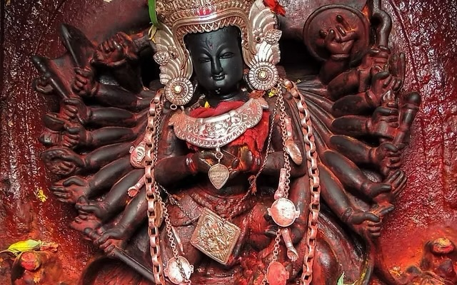
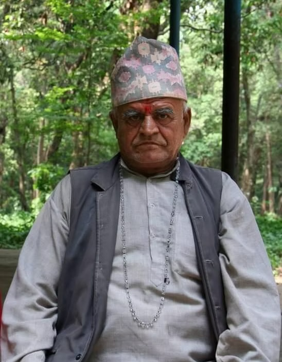
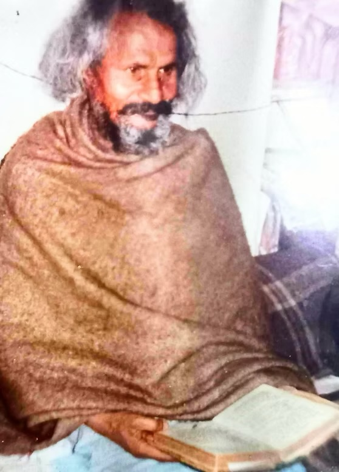
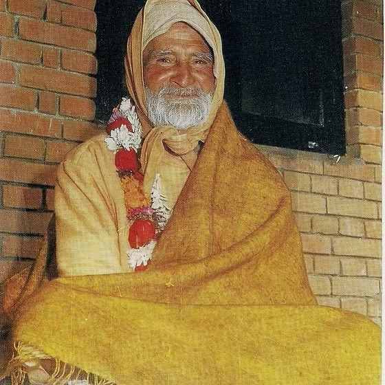
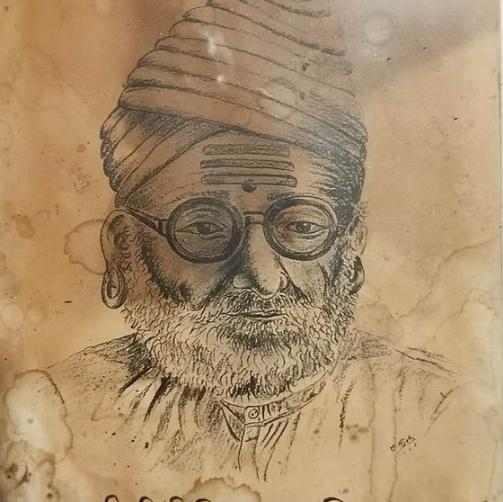

Presentación
Vimarsha Kula Madrid es la comunidad local de Vimarsha Foundation en Madrid, en torno a la enseñanza de Ācārya Sthaneshwar Timalsina, dentro del marco de la tradición Sarvāmnāya.
En la tradición Śaiva-Śākta, kula designa la comunidad que comparte un mismo linaje (paramparā). Nuestra comunidad, en Madrid y en castellano, tiene como fin sostener juntos la práctica (sādhana), estudiar conjuntamente textos clásicos (śāstra) y acompañarnos en el camino, en persona y en línea.

Actividades
Nos reunimos aproximadamente cada quince días durante una hora, en Madrid y en línea. Cada sesión comienza con una breve recitación (pāṭha) y unos minutos de contemplación (dhyāna), y continúa con un pasaje de un texto clásico (śāstra) o un diálogo (saṃvāda) sobre un tema previamente anunciado. Poco a poco nos iniciamos también en la práctica (sādhana), siempre según las indicaciones de la tradición.
Cada encuentro es un tiempo para practicar y cultivar juntos el razonamiento correcto (sattarka) y la confianza (śraddhā), alimentando el sentido de comunidad (kula). Entre una sesión y otra, el estudio (svādhyāya) y la práctica (sādhana) continúan en solitario, y la conversación sigue en un grupo de WhatsApp. Quien lo desee puede compartir allí dudas, reflexiones, lecturas y experiencias de la práctica, a su propio ritmo.
Círculo de estudios
Asociado al Vimarsha Kula Madrid, el Círculo de Estudios de Filosofía Śaiva-Śākta acompaña a quienes desean seguir en castellano el curso de introducción al Sarvāmnāya de Vimarsha Foundation, que la tradición requiere antes de recibir la iniciación (dīkṣā) de manos de Ācāryaji Sthaneshwar Timalsina.
Nos reunimos para leer juntos los materiales del curso, resolver dudas, conversar sobre los textos y compartir reflexiones sobre nuestra práctica (sādhana) en la tradición, de modo que el idioma no sea una barrera para acercarse a la enseñanza. El círculo está abierto también a quienes, sin plantearse por ahora la iniciación, quieran estudiar con rigor la filosofía de la tradición.
Tradición

En la tradición Śaiva-Śākta, el conocimiento se transmite de maestro a discípulo, dentro de un linaje. Nuestra tradición (sampradāya) se denomina Sarvāmnāya, e integra en un único sistema grandes corrientes como Trika, Kālīkrama, Kubjikā y Śrīvidyā. Esta síntesis se ha preservado en Nepal, especialmente en el valle de Katmandú, al menos desde el siglo XII, y sus enseñanzas se han transmitido sin interrupción hasta nuestros días.
Fuera de Nepal, el linaje Sarvāmnāya tiene hoy en Ācārya Sthaneshwar Timalsina a su principal depositario. Formado desde la infancia en el gurukula védico de su padre y consagrado como ācārya en 1996, une la transmisión tradicional con una destacada carrera universitaria, hoy como titular de la cátedra de Humanidades Índicas Clásicas de la Stony Brook University (Nueva York).
En 2019 fundó Vimarsha Foundation, concebida como un gurukula global para el estudio de los sistemas filosóficos clásicos de la India. Vimarsha Kula Madrid nace en el seno de este gurukula para reunir en Madrid a personas iniciadas en el sampradāya, así como a quienes, sin estar iniciadas, quieran acercarse a la tradición. En nuestro blog presentamos la genealogía completa del linaje.

Paṇḍita Tanka Prasad Timalsina
Svāmī Premchetan Brahmacārī Śaṅkara Caitanya Bhāratī
Śaṅkara Caitanya Bhāratī
Khaptaḍa Bābā Rāmānanda Giri
Rāmānanda Giri
Yogī Kṣiprānāth
Participar
La participación es gratuita y el kula está abierto a cualquier persona que sienta la llamada de este camino, sin necesidad de saber sánscrito ni de formación académica. Basta con un corazón abierto y confianza en el linaje.
Las sesiones son inicialmente en castellano, pero quienes hablen inglés son igualmente bienvenidos.
Para participar, puedes escribirnos por WhatsApp y contarnos brevemente qué te mueve a unirte.
Filosofía
Una de las enseñanzas más profundas de nuestra tradición es que la plenitud (pūrṇatā) no es algo que nos falte, sino algo que hemos olvidado. Presente desde los textos fundacionales (āgama) de diversas corrientes Śaiva-Śākta, esta intuición alcanzó su formulación más rigurosa con el filósofo cachemir Abhinavagupta (siglos X–XI). Su sistema Trika (impropiamente llamado “shivaísmo de Cachemira”) integró corrientes como Kaula y Krama con la filosofía del reconocimiento (Pratyabhijñā), sistematizada antes por Utpaladeva, el maestro de su maestro.

Como indica su nombre, la escuela del reconocimiento invita a reconocer (pratyabhijñā) que la realidad entera, y nosotros en ella, es conciencia (caitanya), unidad indisociable de manifestación (prakāśa) y reflexividad (vimarśa). Se trata de una ontología monista, inseparable de una praxis contemplativa. Comparte así con el Advaita Vedānta de Śaṅkarācārya la afirmación de un absoluto no dual, pero no niega su dimensión creativa, dinámica e inmanente (śakti). Por eso se define como un no dualismo supremo (paramādvaita), que no excluye la diversidad del mundo, sino que la integra.
Lo que nos limita, entonces, no es el mundo fenoménico. Es la propia conciencia universal (Paramaśiva) la que, en virtud de su libertad (svātantrya), se contrae (saṃkoca), vela su plenitud y se experimenta como una pluralidad de sujetos finitos, cuyo campo de experiencia se articula en objetos aparentemente independientes. Por consiguiente, la liberación (mokṣa) consiste en recordar nuestra propia naturaleza (svarūpa) como esa plenitud, hasta que sujeto y objeto se descubran como polos de una sola conciencia indivisa (saṃvit). Hablamos, por tanto, de un despertar que no aguarda a la muerte (jīvanmukti), y en el que la propia limitación motora, cognitiva y fenoménica del sujeto psicofísico (jīva) se revela como expresión particularizada de la conciencia. De ahí el asombro gozoso (camatkāra) con que la conciencia se deleita en la diversidad de estados (bhāva) y sabores (rasa) que la limitación y la multiplicidad posibilitan. No se trata, pues, de una filosofía centrada en la mera especulación intelectual, sino de una filosofía experiencial cuyo carácter es fundamentalmente soteriológico. Estudio (svādhyāya) y práctica (sādhana) son, así, medios orientados a la realización de la unidad indisoluble (sāmarasya) de Śiva y Śakti, la conciencia y su dinamismo autorreflexivo.

Esta unidad no anula la relación. La tradición reconoce la śakti como un tú vivo al que es posible dirigirse, de modo que la propia no dualidad deja espacio para el encuentro. La devoción (bhakti) no supone así un retorno al dualismo, sino el juego relacional de una conciencia que se desdobla para amarse y reconocerse a sí misma. El propio Utpaladeva, que sistematizó la filosofía del reconocimiento, expresó esto en sus himnos (Śivastotrāvalī), donde el pensamiento no dual se dirige a lo absoluto como a un tú. Por eso, en nuestro kula, el estudio no es un fin en sí mismo. El razonamiento correcto (sattarka), la confianza (śraddhā) y la devoción (bhakti) se entienden como facetas de una misma realización.